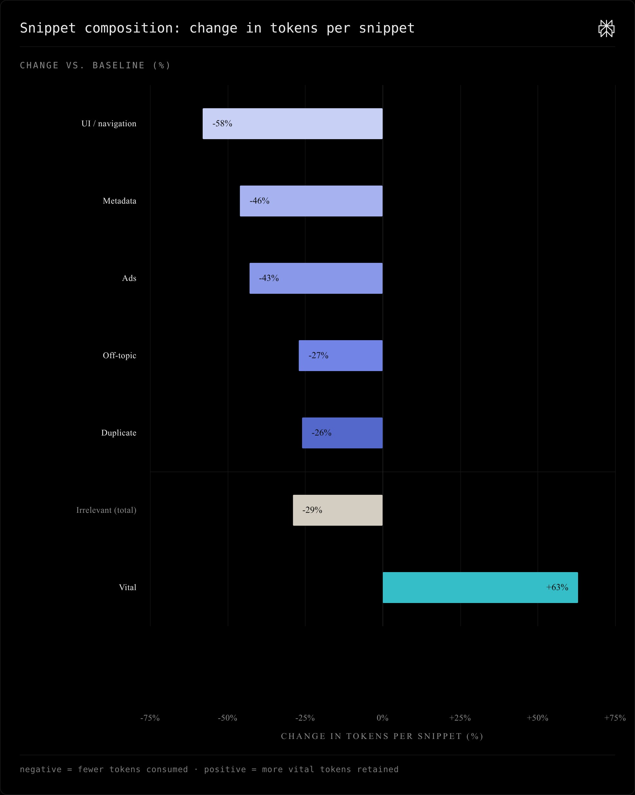

Snippet bar
Use when you have a handful of named categories and one quantity per category. The story is the spread between them. Negative and positive on the same axis works fine.
Chart toolkit · Perplexity
Pre-built chart templates with the color, spacing, and hierarchy decisions already made. Swap in your data, ship. The audit harness catches the mistakes you'd otherwise catch in review.
01 · Templates
02 · Social cards
Each template has a 1080×1080 variant tuned for social feeds. Type sizes scale up, the frame becomes square, and density drops to fit a phone screen. The scorecard shows the top six rows at 1:1 instead of all eight, because the social card story is who's at the top, not the full ranking.
03 · Audit
04 · Background
Until last week, every chart shipped at Perplexity was a one-off. Whoever built it had to re-decide every visual question from scratch. Some decisions went well. Many didn't. Hue-coded sequential data, four retinal variables stacked on one diagram, spacing that wandered between five and eighteen pixels with no consistent reason.
The rules that catch these mistakes live in books most of us haven't read. The toolkit pulls what's in those books, adds what's been learned shipping real work, and turns it into defaults that don't require a data-viz background.
Rule 01
Every chart has one thing the reader should take away. Color that. Leave everything else neutral. If three bars are teal, two are magenta, and one is indigo, nothing is encoded. Reserve hue for the moment that earns it.
Bertin pp. 85–91 · selective vs associative variables
Rule 02
For quantitative comparison, position-on-aligned-scale beats every other encoding by a wide margin. Cleveland and McGill ranked it #1 across forty years of perception experiments. Bars and aligned dot plots. Skip pie, area, angle.
Cleveland & McGill 1984 · perceptual accuracy ranking
Rule 03
If your data has an order (low to high, before to after, worst to best), encode it with value: a single-hue ramp from light to dark. Multiple hues for ordered data is a construction error. The reader has to learn a color-to-number mapping the chart is hiding from them.
Bertin pp. 85–91 · the construction error
Rule 04
A wire between two nodes, a gap between bars, padding around a chart's data area: the channel is what makes the relationship legible. Pick one token from the spacing scale and use it everywhere. Don't let any channel collapse below 20 pixels.
Tufte chapter 5 · data-ink ratio and the small-multiples grid
What bad looks like. The pair below is a real diagram from a launch day, and the rebuilt version. The failure mode is structural, not aesthetic. Four retinal variables active at once (color, size, position, outline weight) instead of three.
Before · launch day

Five steps crowded into one horizontal band. No hierarchy between action and outcome. Four retinal variables active, exceeding Bertin's image limit of three.
After · rebuilt

Position carries the flow. Value separates the live step from the rest. One accent marks the punchline. Three retinal variables. The story reads in one glance.
The harness found ten sub-floor spacing violations on the original snippet bar and seven on the frontier line. Both were caused by chained margins between sections, which collapse unreliably across browsers and zoom levels. The corrected versions use a CSS Grid stack with a single row-gap token. The gap becomes the contract. There's nothing to compute.
Before · 10 spacing violations

Every red box is a layout gap below the 20-pixel floor. The legend on the right enumerates them. Each violation maps to a specific token; the fix in every case is to replace the margin with a grid row-gap.